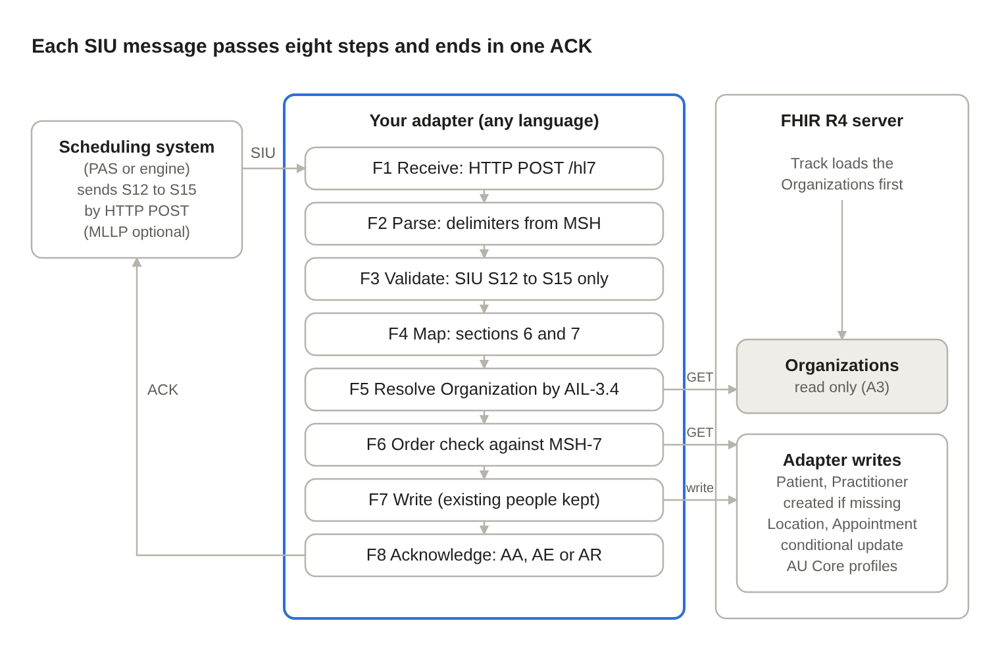

HL7 v2 SIU to FHIR Appointment - AU Core (Proof of Concept)
0.1.0 - ci-build

HL7 v2 SIU to FHIR Appointment - AU Core (Proof of Concept)
0.1.0 - ci-build

HL7 v2 SIU to FHIR Appointment - AU Core (Proof of Concept) - Local Development build (v0.1.0) built by the FHIR (HL7® FHIR® Standard) Build Tools. See the Directory of published versions
Oct 26, 2026 · @DFF
Track 2B participants build an adapter that receives HL7 v2 SIU scheduling messages and keeps a FHIR R4 server's appointments up to date, producing resources that conform to AU Core 2.0.0. Build it in any language; this document is the contract your adapter is tested against.
A reference implementation in Python (siu-fhir-au-core) behaves exactly as described here, and its sample messages and expected results are the Track 2B test set (section 9).
| In scope | Out of scope |
|---|---|
| SIU events S12 (new booking), S13 (reschedule), S14 (modification), S15 (cancellation) | Other SIU events (S16–S26) and other message types: reject them |
| HTTP POST input with HL7 acknowledgements; MLLP input is optional | Security: no authentication or TLS is required |
| Writing Appointment, Patient, Practitioner and Location; referencing existing Organizations | Slot and Schedule resources |
| AU Core 2.0.0 for Patient, Practitioner, Location, Organization; a track profile for Appointment | Querying or displaying appointments (that is the front end's job) |
All test data is simulated. IHI, HPI-I and Medicare numbers in the samples are synthetic: they pass the AU Base format checks but were not issued to anyone.
The keywords SHALL, SHOULD and MAY are used as in RFC 2119: SHALL is required to pass the track, SHOULD is expected unless you note why not, MAY is optional.
The key assumption: every facility's Organization is already on the FHIR server before any SIU message arrives, with an identifier whose system is http://example.org/fhir/sid/organization and whose value equals the facility code sent in AIL-3.4. The adapter looks these up and never changes them.
| # | Assumption | Detail |
|---|---|---|
| A1 | FHIR R4 (4.0.1) server reachable over REST | A shared HAPI FHIR server is provided at the event; its base URL is given at kick-off. Base URL is configurable, e.g. http://localhost:8080/fhir for local testing |
| A2 | Server supports search by identifier, conditional update (PUT [type]?identifier=…) and conditional create (If-None-Exist) |
All standard FHIR R4 REST interactions |
| A3 | Organizations are pre-loaded (above) | Example: Organization "Simulated Hospital" with identifier http://example.org/fhir/sid/organization | SIMHOSP, plus its address. The track supplies them as a transaction Bundle |
| A4 | Messages are HL7 v2.5 SIU, pipe-delimited (ER7), one message per HTTP request body (or MLLP frame) | Delimiters are read from MSH, never assumed |
| A5 | Sender follows Australian v2 conventions for national identifiers | IHI ^^^AUSHIC^NI, Medicare ^^^AUSHIC^MC, HPI-I XCN.13 NPI, Medicare provider number XCN.9 AUSHICPR |
| A6 | Timestamps without a UTC offset are local time in a configured zone | Default Australia/Brisbane (+10:00, no daylight saving) |
| A7 | The adapter is the only writer of Appointments for these messages | Each message rebuilds the whole Appointment |
If an Organization is missing despite A3, the adapter SHALL either create a placeholder Organization (section 6.8) or reject the message with AE; the choice is the team's. State which option you chose when you register for the track.

[embedded content: adapter architecture · 3 components, 8 steps]Messages arrive by HTTP POST; MLLP is an optional extra. The adapter never changes an existing Organization, Patient or Practitioner: it references the server's copy as is. It creates a Patient or Practitioner only when none matches, and an Organization placeholder only for teams that choose that option (F5). Locations and the Appointment are written with conditional updates, so a replayed message changes nothing. A front end reads the server directly and is outside this track.
The adapter SHALL perform F1–F8 for every message, in order, and SHALL send exactly one acknowledgement per message whatever happens.
| ID | Function | Requirement |
|---|---|---|
| F1 | Receive | SHALL accept one raw HL7 message in the body of an HTTP POST and return its ACK in the response (section 5.1). MAY also listen for MLLP on a configurable TCP port (2575 by default), accepting several messages on one connection (section 5.2) |
| F2 | Parse | SHALL read the delimiters from MSH-1 and MSH-2; split segments on CR (also accept LF and CRLF); split fields, repetitions, components and sub-components; decode escapes \F\ \S\ \T\ \R\ \E\. Field numbers follow HL7: MSH-1 is the field separator |
| F3 | Validate | SHALL reject (AR) anything that is not SIU or not S12–S15. SHALL return AE for required data missing or invalid (section 8) and write nothing |
| F4 | Map | SHALL build Patient, Practitioner(s), Location(s) and the Appointment as in section 6, and apply the code mappings in section 7 |
| F5 | Resolve Organizations | For each distinct AIL-3.4 facility code: SHALL search Organization?identifier=http://example.org/fhir/sid/organization\|<code> and use the result unchanged. If none exists, SHALL either create a placeholder with conditional create and log a warning, or reject the message with AE (team's choice; section 8) |
| F6 | Order check | SHALL find any existing Appointment by its identifier. If the stored source message time (extension, section 6.9) is later than this message's MSH-7, SHALL acknowledge AA and change nothing |
| F7 | Write | For the Patient and each Practitioner, SHALL search on the match identifier and, if one exists, reference it unchanged (SHALL NOT update it); if none exists, SHALL create it with conditional create. SHALL write Locations with conditional update, then the Appointment (update by id if it exists, otherwise conditional update). Replaying a message SHALL NOT create duplicates |
| F8 | Acknowledge | SHALL return an original-mode ACK (section 5.3): AA on success or stale message, AE on data or server errors, AR on rejection |
| F9 | Log | SHOULD log each message's control ID, outcome and every warning (dropped identifiers, placeholders, untranslated codes) |
The adapter SHOULD process messages one at a time (or serialise per appointment) so two messages for the same appointment cannot race.
Send each message as the body of POST <adapter base URL>/hl7, one message per request. Segments MAY be separated by CR, LF or CRLF. The response SHALL carry the original-mode ACK (section 5.3), with this HTTP status:
| Status | When |
|---|---|
| 200 | ACK is AA (including a stale message, F6) |
| 422 | ACK is AE or AR |
| 400 | Empty or oversized body; no ACK can be built |
The adapter SHOULD also answer GET /health with 200, so hosting platforms and test tools can check it is up. The reference implementation returns JSON: the ACK in ack (segments separated by LF for readability), plus appointment, resources and warnings. Teams MAY return the ACK as plain text instead.
HTTP is the primary interface because many hosting services expose only HTTP(S); a Render web service, for example, routes public traffic to one HTTP port only. Example: curl --data-binary @01_s12_book.hl7 https://<adapter>/hl7 (on Windows PowerShell, curl.exe --data-binary "@01_s12_book.hl7" …).
If offered, each message is framed as 0x0B + message + 0x1C 0x0D, with segments separated by CR (0x0D). The ACK goes back on the same connection in the same framing. Several messages MAY arrive on one connection; process and acknowledge them in order.
Original-mode ACK, segments separated by CR:
MSH|^~\&|<your app>|<your facility>|<MSH-3>|<MSH-4>|<now, YYYYMMDDHHMMSS+ZZZZ>||ACK^<MSH-9.2>^ACK|<new control id>|<MSH-11, else P>|<MSH-12, else 2.5>
MSA|<AA|AE|AR>|<received MSH-10>
ERR|||<code>^<text>^HL70357|E||||<readable explanation>
AE or AR; section 8 lists the codes.|, ^, ~, \ or & in the explanation SHALL be escaped.All requests use Accept and Content-Type: application/fhir+json; writes SHOULD send Prefer: return=representation. For one message, in this order:
| Step | Request | Purpose |
|---|---|---|
| 1 | GET Appointment?identifier=<system>\|<value> |
Find the existing Appointment (filler ID, else placer ID) for F6 |
| 2 | GET Organization?identifier=http://example.org/fhir/sid/organization\|<AIL-3.4> |
Per facility; use the result as is |
| 2a | POST Organization with header If-None-Exist: identifier=… |
Only when step 2 found nothing and the team creates placeholders |
| 3 | GET Patient?identifier=<system>\|<value> |
First usable PID-3 identifier is the match key; if found, use it as is |
| 3a | POST Patient with header If-None-Exist: identifier=… |
Only when step 3 found nothing |
| 4 | GET Practitioner?identifier=<system>\|<value> |
Per active AIP with an ID and family name; if found, use it as is |
| 4a | POST Practitioner with header If-None-Exist: identifier=… |
Only when step 4 found nothing |
| 5 | PUT Location?identifier=<system>\|<value> |
Per active AIL with location parts |
| 6 | PUT Appointment/<id>, or PUT Appointment?identifier=… if new |
Write the rebuilt Appointment |
In token searches, escape |, ,, $ and \ inside the system or value with a backslash, then URL-encode the whole parameter. A conditional update or create that matches more than one resource fails (HTTP 412), and a Patient or Practitioner search that returns more than one match is ambiguous: treat both as a server error (AE, code 207).
Every message rebuilds the whole Appointment from that message; Patient, Practitioner and Location are rebuilt and overwritten too. Field numbers are HL7 v2.5; X-n.m.s = field n, component m, sub-component s.
Identifier systems. {c} is a code taken from the message, percent-encoded; an empty code becomes default.
| Resource / identifier | system |
value |
type |
|---|---|---|---|
| Appointment, filler ID | http://example.org/fhir/sid/appointment/filler/{SCH-2.2, else SCH-2.3} |
SCH-2.1 | v2-0203 FILL |
| Appointment, placer ID | http://example.org/fhir/sid/appointment/placer/{SCH-1.2, else SCH-1.3} |
SCH-1.1 | v2-0203 PLAC |
Patient MRN (PID-3.5 = MR) |
http://example.org/fhir/sid/mrn/{PID-3.4} |
PID-3.1 | v2-0203 MR |
| Patient, other local IDs | http://example.org/fhir/sid/patient/{PID-3.4}/{PID-3.5, else id} |
PID-3.1 | v2-0203 {PID-3.5} if present |
| IHI, Medicare, HPI-I, provider number | Fixed national systems (section 7.6) | ||
| Practitioner, local ID | http://example.org/fhir/sid/practitioner/{AIP-3.9} |
AIP-3.1 | none |
| Location | http://example.org/fhir/sid/location |
AIL-3.4 / AIL-3.1 / AIL-3.2 / AIL-3.3, empty parts skipped, joined with / (e.g. SIMHOSP/OPD/CLINIC1) |
none |
| Organization (lookup only) | http://example.org/fhir/sid/organization |
AIL-3.4 | none |
The filler ID is the Appointment's match key; the placer ID is used only when SCH-2 is empty. If both are empty the message gets AE.
Date-times. HL7 DTM is YYYY[MM[DD[HH[MM[SS[.S…]]]]]][+/-ZZZZ]. Missing parts default to the start of the period. Keep a given offset; otherwise apply the configured time zone. Write FHIR dateTime with the offset, e.g. 2026-10-14T09:30:00+10:00. A value that doesn't parse, or has an impossible part (month 13), is an error (AE, 102).
Coded fields (CE). CE.1 → coding.code; CE.2 → coding.display and text (text = CE.1 if CE.2 is empty). For coding.system:
HL70276 → http://terminology.hl7.org/CodeSystem/v2-0276http://example.org/fhir/CodeSystem/v2-local/{CE.3}Resource segments. An AIS, AIG, AIL or AIP whose segment action code (field 2) is D is ignored entirely. Any other value, or none, counts as active. RGS segments are ignored and all groups are flattened into one Appointment.
Durations. Units come from CE.1, case-insensitive: s/sec/second(s); min/mins/minute(s); h/hr/hrs/hour(s); d/day(s). Empty units mean minutes, with a warning. A non-numeric, negative or infinite amount, or an unknown unit, is an error (AE, 102).
Profile: SIU AU Appointment (http://example.org/fhir/siu2fhir-au/StructureDefinition/siu-au-appointment), set in meta.profile.
| HL7 v2 | FHIR Appointment | Rule |
|---|---|---|
| SCH-2, SCH-1 | identifier[] |
Filler first, then placer (6.1) |
| SCH-25 + trigger event | status |
Section 6.3 |
| SCH-6 | cancelationReason |
CE → CodeableConcept, only when status = cancelled |
| SCH-7 | appointmentType |
CE → CodeableConcept |
| AIS-3 (each active AIS) | serviceType[] |
CE → CodeableConcept |
| SCH-11.4.1 | start |
Else the earliest AIS-4 / AIG-8 / AIL-6 / AIP-6 of active segments |
| SCH-11.5.1 | end |
Else start + SCH-9 (units SCH-10); else the latest resource start + its duration (AIS-7/8, AIG-11/12, AIL-9/10, AIP-9/10) |
| (computed) | minutesDuration |
Whole minutes from start to end, rounded down |
| NTE-3 (all NTE segments) | comment |
Joined with a newline, in message order |
| PID, AIP, AIL, AIG | participant[] |
Section 6.4 |
| MSH-7 | extension source-message-datetime (valueDateTime) |
Used by the order check (F6) |
| MSH-10 | extension source-message-control-id (valueString) |
Traceability |
| SCH-8, SCH-12 to SCH-24, SCH-26/27, TQ1 | not mapped |
End before start is an error (AE, 101). FHIR R4 rule app-3 needs both start and end unless the status is proposed, cancelled or waitlist, so a message without them gets AE (101).
Extension URLs: http://example.org/fhir/siu2fhir-au/StructureDefinition/source-message-datetime and …/source-message-control-id.
| Trigger | SCH-25 present and in table 0278 | SCH-25 empty or unrecognised |
|---|---|---|
| S12 | Mapped value (section 7.1) | booked |
| S13, S14 | Mapped value | Status of the existing Appointment (booked if new) |
| S15 | cancelled |
cancelled |
An unrecognised SCH-25 code is logged as a warning, not rejected.
In this order, each with status = accepted:
actor.reference = the Patientactor.display = given names + family name from the first named entryrequired = requiredactor.reference = the Practitioner, actor.display = prefix + given + family.actor.display only (the name, or Unidentified personnel).type from AIP-4 (section 7.3).actor.reference = the Location, actor.display = its name.actor.display only (AIL-3.9, or Unidentified location).actor.display = AIG-3.2, else AIG-3.1. No resource is created.type from AIG-4 (section 7.3).Profile: AU Core Patient (http://hl7.org.au/fhir/core/StructureDefinition/au-core-patient), set in meta.profile.
This mapping is used only to create a Patient that isn't on the server yet. If a Patient with the match identifier (the first usable PID-3 identifier) already exists, the adapter references it unchanged (F7), and the Appointment's patient actor.display SHOULD come from that Patient's name.
| HL7 v2 | FHIR Patient | Rule |
|---|---|---|
| PID-3, each repetition | identifier[] |
By PID-3.5 / PID-3.4, see the table below. The first identifier kept is the match key |
| PID-5, each repetition with a family or given name | name[] |
family = XPN.1.1; given = [XPN.2, XPN.3]; prefix = XPN.5; suffix = XPN.4; use = official when XPN.7 = L; text = prefix, given, family, suffix joined with spaces |
| (no family name in any name) | extra name entry |
{"extension":[data-absent-reason = unknown]} and nothing else (AU Core rules au-core-pat-02 and -03) |
| PID-7 | birthDate |
Precision kept (YYYY, YYYY-MM or YYYY-MM-DD; any time dropped). Empty → _birthDate with data-absent-reason unknown. Invalid → AE (102) |
| PID-8 | gender |
Section 7.2. Empty → unknown (AU Core requires gender) |
| PID-10.1 | extension indigenous-status |
Section 7.5 |
| PID-11, each repetition | address[] |
line = [XAD.1.1, XAD.2]; city = .3; state = .4; postalCode = .5; country = .6; normalised as in section 7.7; text = "line, city, state postcode" |
| PID-13 / PID-14 | telecom[] |
Email when XTN.4 is set and XTN.3 = Internet or X.400, or XTN.2 = NET. Otherwise phone: XTN.1, else XTN.6 + space + XTN.7. use = home (PID-13) or work (PID-14); mobile when XTN.3 = CP |
| PID-15 | communication[0].language |
text = CE.2 or CE.1. Add coding system urn:ietf:bcp:47, code = CE.1 in lower case, only when CE.3 is ISO639, ISO639-1, BCP47 or IETF |
PID-3 identifiers, checked in this order for each repetition:
| Condition | Result |
|---|---|
PID-3.5 = NI, or PID-3.4 = AUSHIC and value starts 800360 |
IHI (7.6). If the value fails the IHI check, drop it and warn |
PID-3.5 = MC |
Medicare (7.6). Not 10–11 digits → drop and warn. PID-3.8 → period.end |
PID-3.4 = AUSDVA |
Kept as a local identifier (6.1) with a warning: SIU carries no DVA entitlement type, which the AU DVA Number profile requires |
PID-3.5 = MR |
MRN (6.1). No assigner |
| anything else | Local identifier (6.1) |
If no identifier survives, the message gets AE (101): AU Core rule au-core-pat-01.
Profile: AU Core Practitioner. A Practitioner is created only when AIP-3.1 and AIP-3.2 (family name, required by AU Core) are present; otherwise the participant is display-only and a warning is logged.
This mapping is used only to create a Practitioner that isn't on the server yet. If a Practitioner with the match identifier already exists, the adapter references it unchanged (F7), and the participant's actor.display SHOULD come from that Practitioner's name.
| HL7 v2 | FHIR Practitioner | Rule |
|---|---|---|
AIP-3.1 with XCN.13 = NPI, or XCN.9 = AUSHIC and value starts 800361 |
identifier HPI-I (7.6) |
Fails the HPI-I check → local identifier instead, with a warning |
AIP-3.1 with XCN.9 = AUSHICPR |
identifier Medicare provider number (7.6) |
|
| AIP-3.1, other | identifier local (6.1) |
|
| AIP-3.2.1, AIP-3.3, AIP-3.6 | name[0] |
family, given, prefix; text = prefix given family |
| AIP-4 | (on the Appointment participant) | Section 7.3 |
Profile: AU Core Location. One Location per distinct AIL-3 combination; same combination = same Location.
| HL7 v2 / source | FHIR Location | Rule |
|---|---|---|
| AIL-3.4, .1, .2, .3 | identifier |
6.1 (satisfies AU Core rule au-core-loc-01) |
| AIL-3.9 | name |
Else the AIL-3 parts joined with spaces |
| (constant) | status |
active |
| AIL-4 | type[0] |
Translated through the track's location type table (7.4) when listed; else CE → CodeableConcept and a warning |
| AIL-3.3 / .2 / .1 | physicalType |
Most specific part present: bed → bd, room → ro, point of care → wa (7.4) |
| AIL-3.4 → Organization from F5 | managingOrganization |
reference = the server's Organization; display = its name |
That Organization's address[0] |
address |
Copied as is when the Organization has an address |
The adapter SHALL NOT update an existing Organization. Teams that create placeholders (F5) use this when no Organization exists for a facility code:
{"resourceType": "Organization",
"meta": {"profile": ["http://hl7.org.au/fhir/core/StructureDefinition/au-core-organization"],
"tag": [{"system": "http://example.org/fhir/siu2fhir-au/CodeSystem/siu2fhir-tag", "code": "placeholder"}]},
"identifier": [{"system": "http://example.org/fhir/sid/organization", "value": "<AIL-3.4>"}],
"name": "<AIL-3.4>", "active": true}
It is created with POST Organization and If-None-Exist: identifier=http://example.org/fhir/sid/organization|<AIL-3.4>, so it can never be duplicated. A Location under a placeholder has no address.
Code matching is case-insensitive unless stated.
| SCH-25 | status |
Note |
|---|---|---|
| Pending | pending |
|
| Waitlist | waitlist |
|
| Booked | booked |
|
| Started | arrived |
The HL7 v2-to-FHIR IG uses checked-in; this track uses arrived |
| Complete | fulfilled |
|
| Cancelled | cancelled |
|
| Discontinued (v2.3+), DC (v2.9+) | cancelled |
Both spellings SHALL be accepted |
| Deleted | entered-in-error |
|
| Blocked, Overbook | booked |
No exact FHIR equivalent |
| Noshow | noshow |
| PID-8 | gender |
|---|---|
| M | male |
| F | female |
| O, A | other |
| U, N, any other value, empty | unknown |
Codes in the FHIR participant-type value set go to their own code system; anything else follows the CE rule (6.1).
| CE.1 | coding.system |
|---|---|
| ADM, ATND, CALLBCK, CON, DIS, ESC, REF, SPRF, PPRF, PART | http://terminology.hl7.org/CodeSystem/v3-ParticipationType (code in upper case) |
| translator, emergency | http://terminology.hl7.org/CodeSystem/participant-type (code in lower case) |
text = CE.2 when present.
Location.type. Use the track's translation table, which maps local codes to ServiceDeliveryLocationRoleType - AU Extended. The table is supplied at the event and may be empty. A code not in the table is sent as a local code, with a warning.Location.physicalType. System http://terminology.hl7.org/CodeSystem/location-physical-type, using the most specific AIL-3 part present:
bd "Bed"ro "Room"wa "Ward"When PID-10.1 is 1, 2, 3, 4 or 9, add the Patient extension below. Any other value is not mapped, and a warning is logged.
{"url": "http://hl7.org.au/fhir/StructureDefinition/indigenous-status",
"valueCoding": {"system": "https://healthterminologies.gov.au/fhir/CodeSystem/australian-indigenous-status-1", "code": "<PID-10.1>"}}
| Identifier | system |
type.coding |
Check (fail → section 6.5 / 6.6 rule) |
|---|---|---|---|
| IHI | http://ns.electronichealth.net.au/id/hi/ihi/1.0 |
v2-0203 NI |
16 digits, starts 800360, Luhn check passes |
| Medicare card number | http://ns.electronichealth.net.au/id/medicare-number |
v2-0203 MC |
10 or 11 digits |
| HPI-I | http://ns.electronichealth.net.au/id/hi/hpii/1.0 |
v2-0203 NPI |
16 digits, starts 800361, Luhn check passes |
| Medicare provider number | http://ns.electronichealth.net.au/id/medicare-provider-number |
http://terminology.hl7.org.au/CodeSystem/v2-0203 UPIN |
none |
v2-0203 = http://terminology.hl7.org/CodeSystem/v2-0203. Luhn: from the rightmost digit, double every second digit, subtract 9 from any result over 9, and sum all digits; the total must be divisible by 10.
Apply when the country is AU, AUS or Australia, or empty with an Australian state. This shapes the address for the AU Base Australian Address profile:
AU, AUS or Australia → AU.Queensland → QLD). Valid codes are ACT, NSW, NT, QLD, SA, TAS, VIC and WA. Any other value is kept as sent, with a warning.text is always set, so the profile's "text or line" rule holds.An address that still can't meet the profile is a valid plain Address in AU Core.
Every message gets exactly one ACK. On AE or AR nothing from that message is written (an Organization placeholder already created may remain).
| Situation | MSA-1 | ERR-3 (HL7 table 0357) |
|---|---|---|
| Applied | AA |
none |
| Older than the stored source message time (F6) | AA |
none; log it |
| Can't be parsed (doesn't start with MSH, bad segment name) | AR |
207^Application internal error |
MSH-9.1 is not SIU |
AR |
200^Unsupported message type |
| MSH-9.2 is not S12–S15 | AR |
201^Unsupported event code |
| Required data missing: no SCH, no PID, no appointment ID, no usable patient identifier, no start/end where status needs them, end before start, no Organization for an AIL-3.4 facility code (teams that reject, F5) | AE |
101^Required field missing |
| Invalid value: bad date-time (MSH-7 excepted), bad birth date, non-numeric / negative / infinite duration, unknown duration unit | AE |
102^Data type error |
| FHIR server unreachable or returns an error (including 412 multiple matches) | AE |
207^Application internal error |
| Any unexpected error in the adapter | AE |
207^Application internal error |
ERR-4 = E; ERR-8 carries a readable explanation, e.g. PID-7: Invalid HL7 date 'UNKNOWN'.
These are warnings, not errors. The message is accepted (AA) and the warning is logged:
Run these against an empty server with only Organization SIMHOSP loaded (assumption A3). Send the messages in order by HTTP POST (or MLLP, if offered); the results below come from the reference implementation.
01 MSH|^~\&|PAS|SIMHOSP|SIU2FHIR|POC|20261007090000+1000||SIU^S12^SIU_S12|MSG0001|P|2.5
SCH|PLC1001^PAS|FIL2001^SCHED|||||FOLLOWUP^Follow-up^HL70276|Normal^Normal^HL70277|30|min|^^^20261014093000+1000^20261014100000+1000||||||||||||||Booked
PID|1||900001^^^SIMHOSP^MR~8003609900001239^^^AUSHIC^NI~29999999991^^^AUSHIC^MC||TESTPATIENT^ALICE^^^MS^^L||19800101|F||4^Neither Aboriginal nor Torres Strait Islander origin^AUSINDIGENOUS|1 Example Street^^BRISBANE^QLD^4000^AU||^PRN^PH^^^00^00000000~^NET^Internet^alice@example.org||en^English^ISO639
RGS|1|A
AIS|1|A|GPCONS^General consultation^LOCAL
AIL|1|A|OPD^CLINIC1^^SIMHOSP^^^^^Outpatient Clinic 1|CLIN^Clinic^LOCAL
AIP|1|A|8003619900004562^SMITH^JANE^^^DR^^^AUSHIC^^^^NPI|ATND^Attending^LOCAL
02 As 01, except: MSH-7 20261007091000+1000, MSH-9 SIU^S13^SIU_S12, MSH-10 MSG0002, RGS|1|U,
SCH|PLC1001^PAS|FIL2001^SCHED||||PATREQ^Patient request^LOCAL|FOLLOWUP^Follow-up^HL70276||30|min|^^^20261015110000+1000^20261015113000+1000||||||||||||||Booked
03 MSH|^~\&|PAS|SIMHOSP|SIU2FHIR|POC|20261007092000+1000||SIU^S14^SIU_S12|MSG0003|P|2.5
SCH|PLC1001^PAS|FIL2001^SCHED|||||FOLLOWUP^Follow-up^HL70276||30|min|^^^20261015110000+1000^20261015113000+1000
NTE|1||Interpreter required (Mandarin)
PID (as 01)
RGS|1|U
AIS, AIL (as 01)
AIP|1|D|8003619900004562^SMITH^JANE^^^DR^^^AUSHIC^^^^NPI
AIP|2|A|2426621B^JONES^RAJ^^^DR^^^AUSHICPR|ATND^Attending^LOCAL
04 MSH|^~\&|PAS|SIMHOSP|SIU2FHIR|POC|20261007093000+1000||SIU^S15^SIU_S12|MSG0004|P|2.5
SCH|PLC1001^PAS|FIL2001^SCHED||||PATCANC^Patient cancelled^LOCAL|FOLLOWUP^Follow-up^HL70276||30|min|^^^20261015110000+1000^20261015113000+1000||||||||||||||Cancelled
PID, RGS|1|U, AIS, AIL (as 03)
AIP|1|U|2426621B^JONES^RAJ^^^DR^^^AUSHICPR|ATND^Attending^LOCAL
05 MSH|^~\&|PAS|SIMHOSP|SIU2FHIR|POC|20261007094000+1000||SIU^S12^SIU_S12|MSG0005|P|2.5
SCH|PLC1002^PAS|FIL2002^SCHED|||||ROUTINE^Routine^HL70276
PID|1||900002^^^SIMHOSP^MR||TESTPATIENT^BOB^^^MR^^L||19751231|M
RGS|1|A
AIS|1|A|PHYSIO^Physiotherapy^LOCAL|20261016140000|||45|min
AIL|1|A|OPD^PHYSIO1^^SATELLITE^^^^^Physio Room 1
06 MSH|^~\&|PAS|SIMHOSP|SIU2FHIR|POC|20261007095000+1000||SIU^S12^SIU_S12|MSG0006|P|2.5
SCH|PLC1003^PAS|FIL2003^SCHED|||||||15|min|^^^20261017090000+1000^20261017091500+1000||||||||||||||Booked
PID|1||900003^^^SIMHOSP^MR~8003609900001230^^^AUSHIC^NI||^CHARLIE
RGS|1|A
AIS|1|A|GPCONS^General consultation^LOCAL
AIP|1|A|P9999^^ANON|ATND^Attending^LOCAL
The public reference repository holds each message as a complete file in its samples folder, with CR segment terminators.
| Test | Send | ACK | Expected on the server |
|---|---|---|---|
| TC-01 | 01 (S12) | AA | Appointment FIL2001 booked, 2026-10-14 09:30–10:00 +10:00, 30 min. Patient 900001 with MRN (…/mrn/SIMHOSP), IHI, Medicare, Indigenous status 4, language en. Practitioner Dr Jane Smith with HPI-I. Location SIMHOSP/OPD/CLINIC1: physicalType ro, managed by Simulated Hospital, address copied. Role ATND in v3-ParticipationType |
| TC-02 | 02 (S13) | AA | Same Appointment, now 2026-10-15 11:00–11:30; still booked; no cancelationReason |
| TC-03 | 03 (S14) | AA | Dr Smith removed (action D); Dr Raj Jones added with Medicare provider number 2426621B, type UPIN; comment "Interpreter required (Mandarin)"; still booked |
| TC-04 | 04 (S15) | AA | cancelled, cancelationReason "Patient cancelled" |
| TC-05 | 01 again | AA | Ignored as stale (MSH-7 earlier than stored); FIL2001 stays cancelled |
| TC-06 | 05 (S12) | AA | Facility SATELLITE not on server → one placeholder Organization (tag placeholder). Location SATELLITE/OPD/PHYSIO1 with no address. FIL2002 2026-10-16 14:00–14:45 +10:00 (default time zone, AIS timing). Teams that reject instead: AE with ERR-3 101, and nothing from message 05 is written |
| TC-07 | 06 (S12) | AA | Patient 900003: IHI dropped (fails Luhn), gender unknown, _birthDate data-absent-reason, names = [given CHARLIE] + [data-absent-reason only]. No Practitioner; participant display "ANON". FIL2003 09:00–09:15 |
| TC-08 | Any sample, each message twice | AA | No duplicate resources |
| TC-09 | 01 with MSH-9 ADT^A01 |
AR | ERR-3 200; nothing written |
| TC-10 | 01 with MSH-9 SIU^S26 |
AR | ERR-3 201 |
| TC-11 | 01 with PID-7 UNKNOWN |
AE | ERR-3 102; nothing written |
| TC-12 | 06 with SCH-9, SCH-10 and SCH-11 emptied | AE | ERR-3 101 (no start/end for a booked appointment) |
| TC-13 | On a fresh server with SIMHOSP loaded, first load a Patient with MRN 900001 (system …/mrn/SIMHOSP) named Alicia Testpatient-Smith, and a Practitioner with HPI-I 8003619900004562 named Dr Jane Curated; then send 01 | AA | Both kept exactly as loaded; no second Patient or Practitioner. The Appointment references them, with their names as actor display |
After TC-01 to TC-08 the server holds 3 Patients, 2 Practitioners, 2 Locations, 2 Organizations (SIMHOSP and the SATELLITE placeholder) and 3 Appointments. With the reject option: 2 Patients, 2 Practitioners, 1 Location, 1 Organization and 2 Appointments.
These are deliberate choices for the track or are still unconfirmed. Raise them at the track kick-off rather than changing behaviour on your own.
| # | Item | Status |
|---|---|---|
| 1 | SCH-7 → appointmentType (SCH-8 unmapped). The HL7 v2-to-FHIR IG maps SCH-7 → reasonCode and SCH-8 → appointmentType |
Track choice; FHIR R4 binds appointmentType to table 0276, SCH-7's table |
| 2 | Resource-segment timing rolled up into Appointment.start/end; the v2-to-FHIR IG uses participant.period |
Track simplification |
| 3 | Table 0278 Started → arrived (IG: checked-in); Blocked/Overbook → booked (IG: unmapped) |
Track choice |
| 4 | Australian v2 identifier conventions (A5) and PID-10 for Indigenous status | Confirm with real senders |
| 5 | Code values not yet checked against the published sets: Australian States and Territories, Indigenous status codes, location-physical-type bd/ro/wa |
Unverified |
| 6 | Canonical URLs of AU Core Practitioner, Location and Organization assumed from the confirmed AU Core Patient pattern | Unverified |
| 7 | example.org identifier systems and the IG canonical are placeholders |
By design for the track |
| 8 | The track IG and reference implementation have not yet been validated with the HL7 IG Publisher or against a running HAPI server | First build pending |
| 9 | Existing Patients and Practitioners are never updated, so demographic changes in later messages are not stored. Patients are matched on the first usable PID-3 identifier only, so a server Patient without that identifier gets a duplicate | Track choice |
| 10 | HTTP response body format (JSON with an ack member, or the plain-text ACK) is not fixed | Team's choice |
siu-fhir-au-core public GitHub repository github.com/healthinfoservices/siu-fhir-au-core: service, sample messages, FSH IG, seed Organizations. The track IG is published at healthinfoservices.net/efiq-track2b